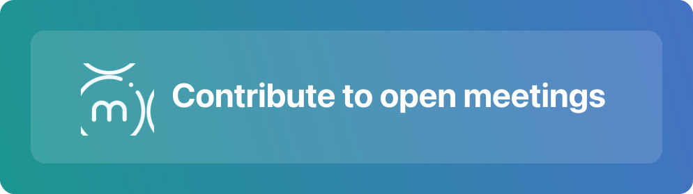

If you use mtngs.io and like it, and you want to help us help you, here are some great ways to do that
Open meetings are all about accessible content, and that’s also why we started mtngs.io. So anything which draws attention to your meetings (or any meetings) on mtngs.io is probably a good idea.
Use mtngs.io with your community for your meetings
Link to your individual meetings and series of meetings on mtngs.io, wherever relevant (project website, GitHub, community page and community calendar, Twitter…). Consider using the mtngs.io link in place of linking to YouTube. Notify about newly-published meetings on mtngs.io with a direct link (on Twitter, internal Slack / Gitter) – does it help you if we auto-tweet each meeting (for retweeting, or for people to follow that directly)?
Tell us about organizations and series with Open Meetings that we haven’t mapped yet. We want to add them all.
Keep recording and uploading your open meetings, wherever we found them. 👉Links to meetings and meeting series on mtngs.io not only lead users directly to your meetings, they also help ensure Google indexes them in a timely manner.
Make it easier for mtngs.io to generate great meeting pages
Organize all the meetings from each series (like a specific team) in one clearly-named playlist on YouTube, under a single YouTube channel for the organization. (Or name videos with a fixed, clear, and simple naming convention, including meeting date.) Add helpful info in the meeting’s YouTube description (your agenda, project links, etc.) Tell us if you’d like to provide more structured info – we’re keen to help visitors and search-engines alike make sense of everything quickly.